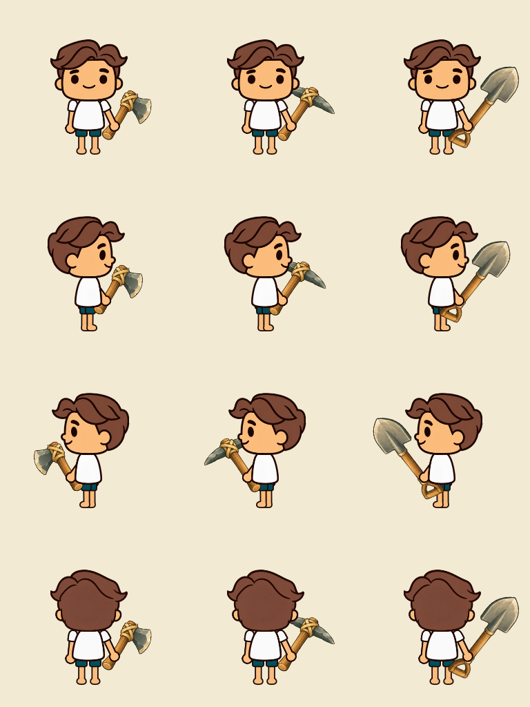
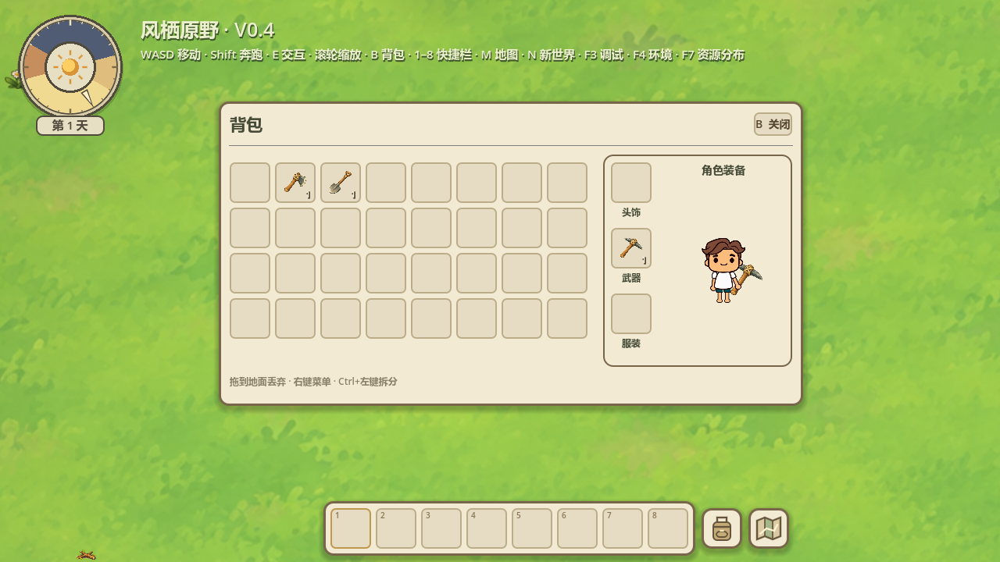
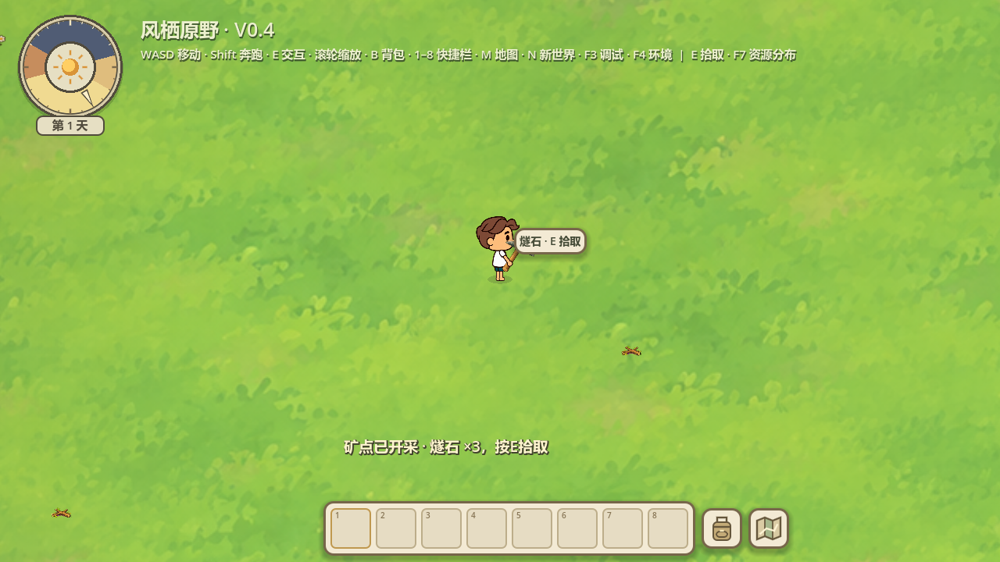

工具图与原生持握 · 正式接入
2026-10-17 · Godot 4.7.2 Stable / Compatibility / RTX5060
用户明确“接入游戏吧”：3图标+3地面形态及candidate-03持握方向已正式接入。123项接入专项 + 原75项装备交互 + 30项图像来源保护 = 228项断言通过，0失败。
运行根目录Start-Playtest.cmd，F6添加工具，B右键装备或拖入武器槽。只放在背包/快捷栏不会拿在手上；卸下立即收起。三工具在世界角色和背包预览中同步显示，支持四方向、行走与原生动作。拾取时先让出手，结束恢复；斧/镐能力门槛与旧存档保持。

实际Godot原生渲染，不是生成立绘：列为石斧、石镐、简易铲子，行依次正面、右侧、左侧、背面。图像注册在原手心，原手掌覆盖柄部；不改变人物比例、部件纹理或左手最后层。正式背包：石斧装备，原角色实时持握。
正式背包：石镐，主手能力仍仅mine。正式背包：简易铲子，D柄/刀头与已批准画稿相同；仅识别dig，不开发挖掘系统。
真实E采矿，工具沿用通用交互反馈，资源与掉落沿用现有系统。原breathe/walk/run/chop/pickup素材与关键帧保持；本轮是原生支点持握兼容接入，未制作新四方向精细采矿/攻击动作，也未把生成完整人物图作为运行素材。原图QA仍保留safe_frame WARN，value=6，threshold=0，文件art/tools-v04/raw-qc/sheet-qc.json。该警告为历史原图留白，获批与整理不改变其记录。
正式路径assets/tools/v04，6PNG与已批准候选逐字节相同，旧24物品图哈希保持。art_source=existing，本轮没有新图片调用、外部资源或依赖。历史来源为generate2dsprite → route_media → Codex (local CLI)，底层精确图片模型和实际费用未知。当前只批准本批与selected candidate-03方向，不批准未来新素材/早期错误草稿。
正式接入123项 · 装备交互75项日志 · 图片来源30项 · 正式来源与用户批准 · 持握配置
工具试用入口仍为同Seed临时世界，不导入试用数量；正式存档/世界/环境/地图与自然资源规则保持。没有进行无关全量回归或新增FPS/性能压力测量。本轮完成停止，等待用户试玩。